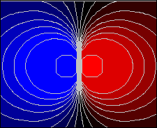
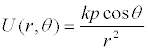

[The Analytic Scalar Field element can display scalar fields using either Cartesian or polar coordinates.]
A quantity, such as temperature, population density, or potential energy, that is defined by a single number (scalar) at every point in space is a scalar field. The Dipole Potential model uses an Analytic Scalar Field to display a visualization of an analytic expression -- either U(x,y) or U(r,θ) -- of the electrostatic potential energy at a point. This scalar field U is the energy required to move a test charge from that point to infinity. Our simulation uses polar coordinates to express the electrostatic potential energy from an electrical dipole located at the coordinate origin. This electrostatic potential energy depends on the distance r to the dipole, on the angle θ from the axis of the dipole, and on the strength of the dipole p. If the distance r is much larger than the charge distribution, the dipole potential can be approximated by

where the electrostatic constant k depends on the choice of units. We choose units such that k*p=1 in our simple model. This formula is entered into the element's Z Data property.
The following EJS models demonstrate how to display two-dimensional scalar and vector fields using elements on the fields and plots tab on the EJS 2D Drawables palette.
The Dipole Potential model was created by Wolfgang Christian and Francisco Esquembre using the Easy Java Simulations (EJS) version 4.1 authoring and modeling tool. You can examine and modify a compiled EJS model if you run the model (double click on the model's jar file), right-click within a plot, and select "Open Ejs Model" from the pop-up menu. You must, of course, have EJS installed on your computer. Information about Ejs is available at: <http://www.um.es/fem/Ejs/> and in the OSP ComPADRE collection <http://www.compadre.org/OSP/>.